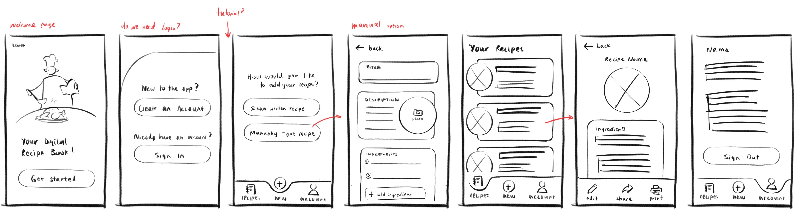
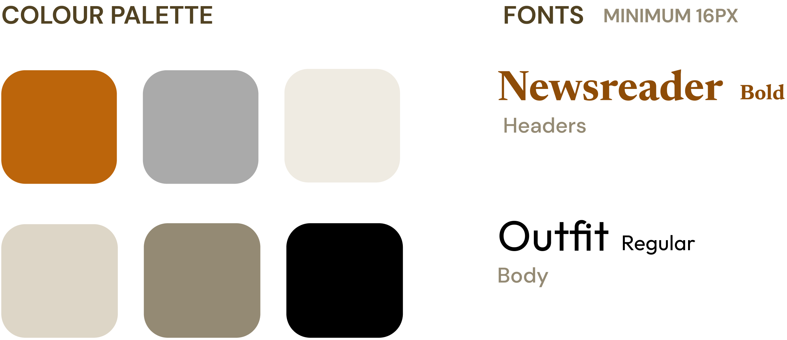

This was a 3 person project developed over the course of 7 weeks. We were tasked with designing, prototyping, and doing user tests for an app with a senior target audience. We made a digital recipe app for Filipino immigrant seniors to share recipes and connect with their family. The finished prototype can be found here: https://preview.uxpin.com/d8d683c4197730c1b045aa4701737d4d26a8181f#/pages/159707647
We started this project by researching our demographic and similar apps to then create sketches and personas. Our style guide includes very warm colors to create a friendly atmosphere, and our fonts are classy but simple and easy to read.
 We then conducted user tests. We tested 9 people in total, ages 20-61, including a Filipino family that matched our target demographic. We created a list of tasks for users to complete and a simple survey to ask them their opinions when they were done. 4 tests were conducted online, which required extra steps to test wifi connectivity and share screens. Generally, our results showed that our styling was effective but that there were inconsistencies and functional errors that hindered the experience.
Two things we changed based on our feedback were adding error prompts and a share function. Error prompts are very important because it helps users know the system’s status and recover from errors. The share function aids our main goal of passing down recipes.
This project was a major learning experience for me because I had little prior knowledge of html and css. By the end, I felt like I was very familiar with html semantic structure and immensely improved my understanding of flexboxes and responsive web design.